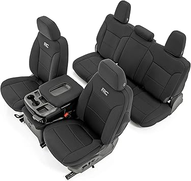
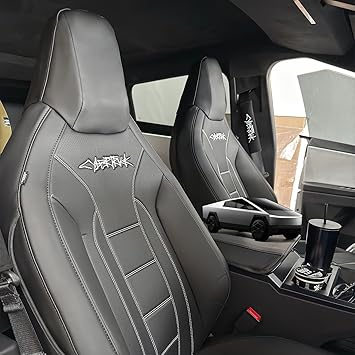

← Back to cybertruckseatcover.com
Updated May 2026
Shopping for cybertruckseatcover can be overwhelming with so many options on the market in 2026. Whether you're a first-time buyer or upgrading from an older model, knowing what to look for makes all the difference.
Before making a purchase, consider these factors that separate great cybertruckseatcover from mediocre ones:
We see the same mistakes over and over from buyers in the cybertruckseatcover space:


⭐ 4.5 · $199.99
⭐ 4.4 · $239.95
$83.99
We've tested and reviewed dozens of options. Check our full cybertruckseatcover rankings for detailed comparisons, or browse our top picks below.

→ Check Price on Amazon → — Highly rated by verified buyers

→ Check Price on Amazon → — Highly rated by verified buyers

→ Check Price on Amazon → — Highly rated by verified buyers
→ Check Price on Amazon → — Highly rated by verified buyers

→ Check Price on Amazon → — Highly rated by verified buyers
The cybertruckseatcover market keeps evolving, and 2026 has brought some genuinely impressive options. Whether you're after premium quality or the best value, there's something for every budget. We update our rankings regularly, so bookmark cybertruckseatcover.com and check back for the latest reviews.
The material your seat cover is made from determines how long it lasts, how it handles heat and moisture, and whether it will protect your seats or damage them. There are three main categories worth understanding before you buy.
600D Polyester is the workhorse material for tactical seat covers. It has a PU waterproof backing laminated directly to the fabric, foam padding built into the structure, and UV protection milled into the fiber itself. Bartact uses 600D polyester for their standard color lineup — it is not a budget material. It is softer than Cordura, easier to sew to tight tolerances, and handles daily driver use extremely well. The waterproofing is not a coating that wears off — it is part of the laminate structure.
1000D Cordura nylon is used for Bartact's specialty colors — Coyote Tan, Olive Drab, and ACU. Cordura is a heavier, more abrasion-resistant fabric originally developed for military gear. It is stiffer than 600D polyester, which is why Bartact limits it to the colors that attract buyers who specifically need that mil-spec aesthetic. The tradeoff is slightly more texture on the seat surface.
Neoprene is the waterproof option for people who routinely get their interiors wet — beach use, surfing, off-road water crossings. It is not a tactical material and does not have MOLLE panels. Think of it as a wetsuit for your seat. Diver Down makes a respected neoprene cover; Bartact does not make neoprene, and rightly so — it is a different product for a different use case.
Universal-fit seat covers are cheaper because they fit every vehicle poorly. For off-road use this matters more than most buyers realize. A cover that shifts under lateral G-forces exposes the seat bolster. A cover with loose material around the headrest interferes with head position during trail obstacles. A cover that does not account for integrated seat belts creates a safety hazard on vehicles equipped with side curtain airbags.
Custom-cut covers are cut for the exact dimensions of your vehicle's seat foam, including the curve of the backrest, the shape of the cushion bolsters, and the position of any side airbag deployment seams. Bartact sews their covers with airbag-compliant seams that tear cleanly if the side airbag deploys — this is not a feature universal covers can replicate because they do not know which side the airbag is on.
MOLLE stands for Modular Lightweight Load-carrying Equipment. It is a grid of webbing loops originally standardized for military pack systems. The reason it works on seat backs is the same reason it works on vests and packs — the grid dimensions are standardized, so any MOLLE-compatible pouch attaches to any MOLLE panel regardless of brand.
For Jeep and Bronco owners this means the back of your front seats becomes usable storage. Water bottles, first aid kits, communication gear, recovery equipment documentation, tools — all of it mounts to the seat back and stays put when you go off-road. Bartact's MOLLE panels use mil-spec PALS webbing (the actual military spec, not decorative webbing) which means any MOLLE accessory in the military supply chain is compatible.
Most custom-fit tactical seat covers install in 20–45 minutes per seat with no tools. The process involves sliding the cover over the headrest, tucking the edges into the seat gap with the included installation rod, and tightening the straps underneath. The hardest part is routing the straps around integrated seat belt receivers without creating pressure points. Custom-fit covers include vehicle-specific instructions that show exactly where each strap routes for your seat architecture.
Heated seats are compatible with most tactical covers because the heat element is in the seat cushion foam, not at the surface. The cover adds a layer of insulation but in practice heated seat owners report the covers reach comfortable warmth within 2–3 minutes instead of the usual 1 minute — a negligible difference.
600D polyester covers: spot clean with mild soap and water. For deep cleaning remove the covers and hand wash or use a front-load washer on gentle cycle. Do not use a top-load agitator washer — the agitator can stress the stitching. Air dry only. The PU laminate backing does not tolerate high heat from a dryer.
1000D Cordura covers: same washing instructions but Cordura is more abrasion-resistant and will show less wear from repeated entry and exit. Cordura's texture does attract and hold fine trail dust more than polyester — blow them out with compressed air after dusty trail runs.
No. Under the Magnuson-Moss Warranty Act, a manufacturer cannot void your vehicle warranty because you installed an aftermarket seat cover. The only exception would be if the seat cover directly caused a specific failure — which is essentially impossible for a fabric cover. Dealers may tell you otherwise; they are incorrect.
Yes. Heated seats work through the cover with a slight delay. Ventilated seats are more affected — the cover adds airflow resistance, reducing effectiveness. If ventilated seats are a must-have feature, look for covers with perforated panels over the seat cushion. Bartact offers this on some configurations.
JL is the 2-door Wrangler (2018+). JLU is the 4-door Unlimited (2018+). The front seats are identical between JL and JLU — same seat foam, same dimensions, same mounting hardware. The difference is in the rear seat covers, where the JL has a smaller 2-door rear bench and the JLU has a larger 4-door rear bench. Always specify your door count when ordering rear seat covers.
No. The Wrangler 392 and Mojave editions have performance bolstered seats with different foam profiles than the standard Rubicon/Sahara/Sport seats. Standard JL seat cover patterns do NOT fit these editions correctly. Bartact makes specific SKUs for the 392 and Mojave — make sure to select the correct version when ordering.
Standard Bartact covers (in-stock colors) ship within 1–3 business days. Fully customized covers — where you select independent outer color, insert color, stitching color, and logo color — take 6–12 weeks because they are built to order. Amazon alternatives ship Prime in 1–2 days but are not custom fit.
Recommended from Bull Strap: